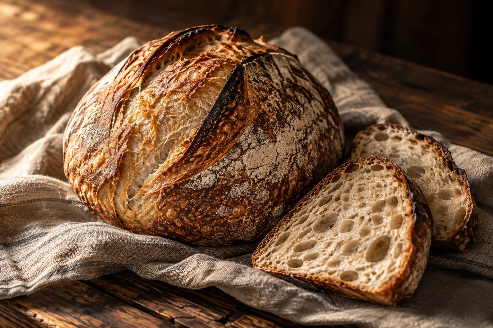

Follow your nose.
Walk in. Take a look. First come, first served, and best before 10 AM.
Find the bakehouse ↗Some things are worth waiting for.
Our bread is one of them.
Slowly risen, baked overnight, and saved in a bag with your name on it. Order by 8 PM. We’ll do the early start.

Eight things, done every week. Each day has its own rhythm—and a few things worth setting an alarm for.
Explore the full menu ↗The dark, caraway-flecked rye has its day. Get in early, or put your name on one.
a little something for later, too.We bake once, overnight. When the shelf is empty, that’s it for the day. Ordered bread waits behind the counter, already yours to collect.
Let us save you one ↗An illustrated comparison. Your named bag stays behind the counter.
Flour, water, salt and starter.
The most important ingredient is the wait.
One bake a day begins the evening before. We mix, fold and let the dough rest. While the town sleeps, we shape and bake. Your order is counted out before the first loaf reaches the shelf.
A few simple ingredients. Four folds over the evening.
Slow and cold. Time for flavour and an open crumb.
Shaped by hand. Scored, steamed and baked dark.
Walk in. Take a look. First come, first served, and best before 10 AM.
Find the bakehouse ↗Choose your bread by 8 PM the night before. A named bag waits at the counter. Pay at pickup.
Order ahead ↗The bread share: one loaf of your choice for four Saturdays. Saved without ordering. $36.
Ask at the counter ↗Often by late morning. We bake once a day. Order ahead if you have a favourite you don’t want to miss.
Until 1 PM Wednesday through Saturday, and until noon on Sunday. Choose a collection window when you order.
Ask at the counter about the date and quantities before making plans. Larger orders need a separate conversation.
This demo menu contains wheat or rye, and the kitchen handles flour throughout. None of these products is presented as gluten-free.
The concept allows changes until 8 PM the night before pickup. This preview does not send or save real orders.
214 Mill Street.
On the corner of Mill and Third, by the old feed store.
Street parking on Third.
Illustrative address & telephone: 555-0142. Not a real business.